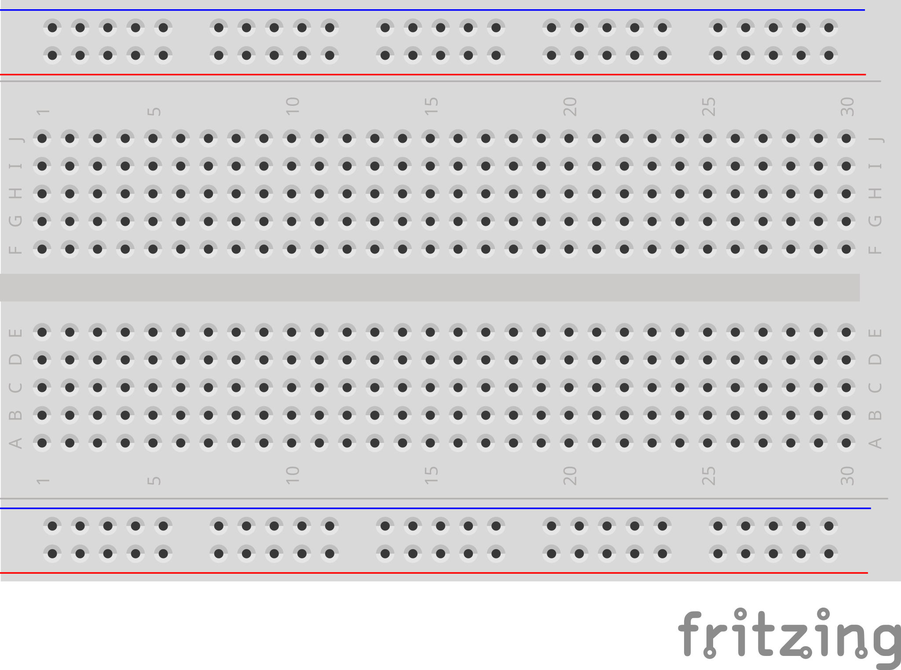

Read this before your first session. You do not need to memorise it — keep it on your workbench and come back to any section when you get stuck.
A breadboard lets you build circuits without soldering. You push the legs of parts (LEDs, resistors, wires) into the holes, and the board connects them together inside — no tools needed. When you are done, you can pull everything out and reuse the parts.
The board has four areas

The real breadboard. Two red/blue power rails at top and bottom (marked + and −). In between, a grid of numbered columns split by a centre gap. Rows are labelled a–e on the top half and f–j on the bottom half.
Inside one numbered column, rows a–e are connected. Holes a5, b5, c5, d5, e5 all share the same electrical connection. Anything you push into those 5 holes is wired together.
Rows f–j are connected the same way, but separately from a–e. The centre gap breaks the connection — holes e5 and f5 are not connected to each other.
The two power rails
The red rail (marked +) runs the full length of the board. Every hole along the red rail is connected. Used for 5 V.
The blue rail (marked −) also runs the full length. Every hole along the blue rail is connected. Used for GND (ground).
Because each rail runs the full length, you can tap power from anywhere along it — you do not need a separate wire for each LED.
How to place an LED on the breadboard
An LED has two legs of different lengths. The long leg is the plus side; the short leg is the minus side. Each leg needs its own numbered column — if both legs go into the same column, the LED is short-circuited and will not light.
Rule of thumb: plant the LED so its two legs go into two different numbered columns (for example, long leg in column 9, short leg in column 8). Resistors work the same way — legs in two different columns.
What "pin 9 → 220 Ω → LED" means on the breadboard
When reference card R1 Wiring 1 writes "Arduino pin 9 → 220 Ω → LED long leg", here is the chain of connections you are building:
[Arduino pin 9] ── wire ── [resistor] ── [LED long leg] ── [LED short leg] ── wire ── [GND]
On the breadboard, each arrow above is one shared column. Using the exact layout from R1 Wiring 1:
A jumper wire from Arduino pin 9 plugs into one hole on the breadboard.
One leg of the 220 Ω resistor plugs into the same numbered column as that jumper — they are now connected.
The resistor's other leg plugs into a new column — a fresh, separate connection.
The LED's long leg plugs into that same new column — now current can flow from pin 9 → resistor → LED.
The LED's short leg plugs into its own column, and a jumper from that column goes to the blue GND rail.
The breadboard is doing the wiring for you — you just pick which column each leg goes into.
Two things to check if something is not working yet
Check 1 — are the LED's two legs in two different columns? If both legs share a column, the long leg and the short leg are connected directly, which shorts the LED and it will not light. Pull one leg and move it one column over.
Check 2 — does each leg share its column with exactly the right neighbour? Trace the chain out loud: "pin 9 jumper and resistor leg go into the same column; the resistor's other leg and the LED long leg go into the same column; the LED short leg and the GND jumper go into the same column." If any of those pairs are in different columns, the chain is broken there. Move the leg into the matching column.
You have what you need
Your next card is R1 — Wiring Reference. Keep R0 on your workbench — if something is not working later, the two checks above will usually find it.